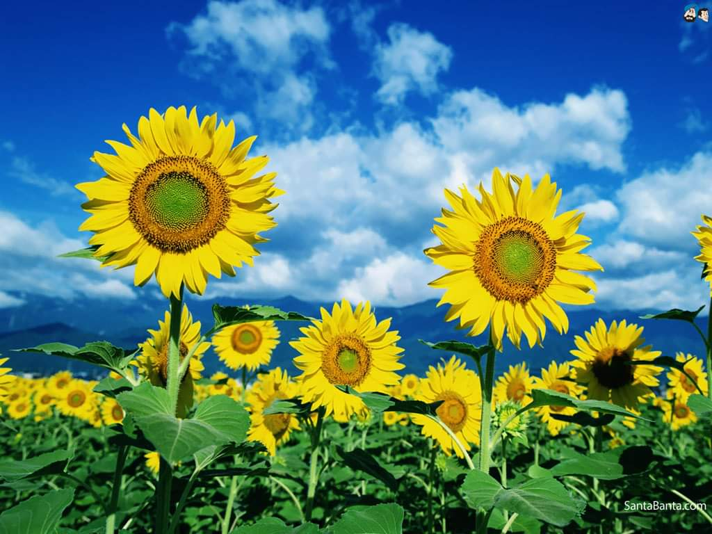

---
---
<main>
  <div id="vision">
    <h2>Zor Günlerin Büyüklerine</h2>

    <p>Sevgili Büyükler, bugün içimizdeki derin acıyı ve diğer pek çok duyguyu dondurup, çocuklarımız için doğru olanı yapma günüdür. Kolay olmadığını biliyoruz ama yitirdiğimiz güzel çocuklarımız, sevgili öğretmenlerimiz adına da sağlıklı bir eğitim için çaba göstermemiz gerekmektedir.</p>

    <p>Sevgili büyükler, okuldan söz ederken “Okul, çocukların gitmek için can attıkları, öğrenmenin tadını aldıkları, bilgileriyle kıvandıkları, arkadaşlarıyla paylaştıkları, öğretmenlerince fark edildikleri ve önemsendikleri, haklar ve sorumluluklarının ayırdına vardıkları, güven içinde oldukları ve coşkularını sergiledikleri bir yer olarak yaşanmalı” şeklinde tanıtırız.  Okula ilişkin özelliklerin tümü çok önemli kuşkusuz ama en temel, en önemli öge güvenliktir.  Sizler çocuklarınızı okula güven içinde olacakları düşüncesiyle gönderiyorsunuz, çocuklar ve öğretmenler de güven içinde olduklarını düşünerek okullarına gidiyor. Bu duygu içinde büyüyorlar, öğreniyorlar, gelişiyorlar. Son zamanlarda yaşananlar kendi okullarında olsun ya da olmasın bu duyguyu ağır bir biçimde örseledi.  Anne babalar da bu güven yokluğunu çok derinden hissediyorlar.  Bunun üstesinden gelmemiz gerek.  Çocuklar, duygularını büyüklerine bakarak yaşarlar; çaresiz görünümlü erişkinler, çocuklara bu zor durumla tek başlarına baş etmeleri gerektiğini duyumsatır. Bu nedenle çocuklarınızla duygularınızı denetimli bir biçimde paylaşın. Yaşananların çok ağır, katlanılmasının zor, üzülmenin çok doğal, korkuların herkeste olabileceğini konuşun.  Ancak, daha da ağırlıklı olarak bundan sonra neler yapılabileceğinin tartışın, bu tür olayların bir daha yaşanmaması için nelerin yapılabileceği için öneriler geliştirin. Bilimsel önerileri olan, güvenilir biliminsanlarının fikirlerini araştırın. Böylesi bir yaklaşım çocuklara, hem duygularının anlaşılabildiğini, yalnız olmadıklarını anlatır hem de bir şeyler yapılabilir umudunun gücünü kazandırır.  Yine de çocuklarımızın ve kendinizin baş edemediğinizi hissettiğinizde gerçek bir uzmandan yardım istemeyi ertelemeyin. Bir an önce eski yaşantınıza dönebilmek çok gereksinim duyulan başetme becerinizi artıracak, çözüme yönelik çabalarınızın, katkılarınızın  yerine ulaşmasına yol açacaktır.</p>

    <p>Okulların güvenliğini çok olumsuz etkileyen, sayıları giderek artan zorbalıkların, çocukların ve hatta öğretmenlerin ruh sağlıklarını çok olumsuz etkilediği bilinmektedir.  Pek çok uygar ve eğitime saygı duyan ülkede bunun önlenebileceği görülmektedir.  Böylesi ortamlarda ağırlıklı olarak görülen, “öğrenilmiş çaresizlik” olarak anılan duygu, hem şiddetin ürünü hem de şiddetin üreticisidir.  Zorbalık yapan çocukların davranım bozukluklarının ve sayılarının giderek arttığı, zorbalığa uğrayanların çökkünlüklerinin de önemli ruhsal sorunları ortaya çıkardığı bilinmektedir.  Her iki durumun da bedeli, çocuklarımızın sağlıklı eğitim ve yaşam haklarının ellerinden alınmasıdır.</p>

    <p>Sevgili Büyükler, çocuklarımız çağdaş eğitimi, güvenli ortamlarda yaşamayı, saygı ve sevgiye dayanan ilişkileri hak etmektedir; ancak çocuklar ve yetişkinler olarak bizler de bu haklara ulaşabilmek için sorumluluklarımızı, ödevlerimizi eksiksiz yerine getirmek zorundayız.  Bu tür acılar, yeterince farkındalığımızın olmadığını, çözüm için yeterli çabayı göstermediğimizi, bilimin yolunu izlemediğimizi, kendi yapabileceklerimizin bilincinde olmadığımızı göstermektedir.  O halde gün acılarımızın çökkünlüğünde kaybolmak değil, çocuklarımıza, doğamıza, değerlerimize sahip çıkma, el ele, yan yana dayanışarak davranma günüdür.  Daha güzel bir dünyada yaşayabilecekken yitip giden o güzel insanlar için, en güzel dönemlerinde çocuklarımıza unutamayacakları korkular saldığımız için hissettiğimiz utancı, görevlerimizi, sorumluluklarımızı fazlasıyla üstlenerek belki bir parça azaltabiliriz.  Bu bilinçle belki yüzümüz kızarmadan, çocuklarımızın gözlerine bakarak “Korkmayın biz varız, gelecek güzel olacak” diyebiliriz.</p>

    <p>Prof.Dr. Ferhunde Öktem</p>

    <hr>

    <p>İnsan yaşamında mutlu ve başarılı anlar olduğu kadar mutsuz olduğu, başarısız olduğunu düşündüğü, belirli kararları vermekte zorlandığı ya da verdiği kararlardan emin olamadığı zamanlar da vardır. Böyle zamanlarda hepimiz önce kendimiz sorunu çözmeye çalışırız. Çoğu kez çözeriz de. Ama zaman zaman zorlanırız ve o zaman bize ve sorunumuza objektif bir biçimde yaklaşıp onu çözmekte bize yardımcı olabilecek uzmanlara ihtiyaç duyarız.</p>

    <p>Bir sorunu çözmenin en iyi yolu o sorun başladığında yardım almak ya da daha da iyisi sorun için hazırlıklı olmak ve önleyici tedbirler almaktır. Bu nedenle bir sorununuz için bize geldiğinizde birlikte durumu değerlendirmek, en iyi çözüm yolu üzerinde birlikte çalışmak ve sizi daha donanımlı hale getirmek için çalışırız.</p>

    <p>Ya da belirgin bir sorunumuz olmadığı halde özel yaşamımızda daha mutlu, iş yaşamımızda daha verimli olmak ve kendimizi geliştirmek isteyebiliriz. Kendimizi daha iyi tanımak ve geliştirmek için de bir profesyonelle bir değerlendirme yapmak isteyebiliriz.</p>

    <p>Psikolojik Hizmetler Enstitüsü olarak amacımız sizinle birlikte sorunlarınızı ve durumu değerlendirip, gereken şekilde yönlendirmektir. Yüzyüze ya da online danışmanlık hakkında bilgi ve randevu için bize ulaşabilirsiniz.</p>

    <p>Tel: 0 312 417 9365 ya da 0 553 408 2079</p>

    <p>Eposta: psikolojikhizmetler@gmail.com</p>
  </div>

  
</main>
